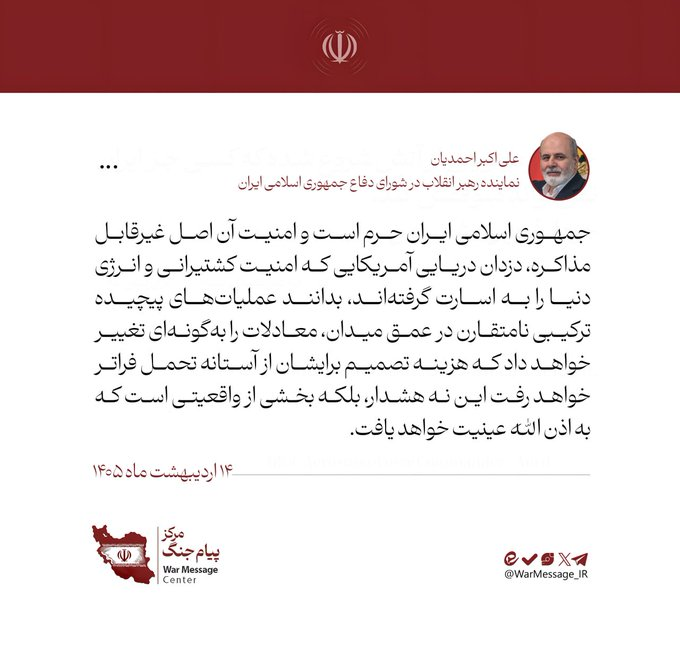
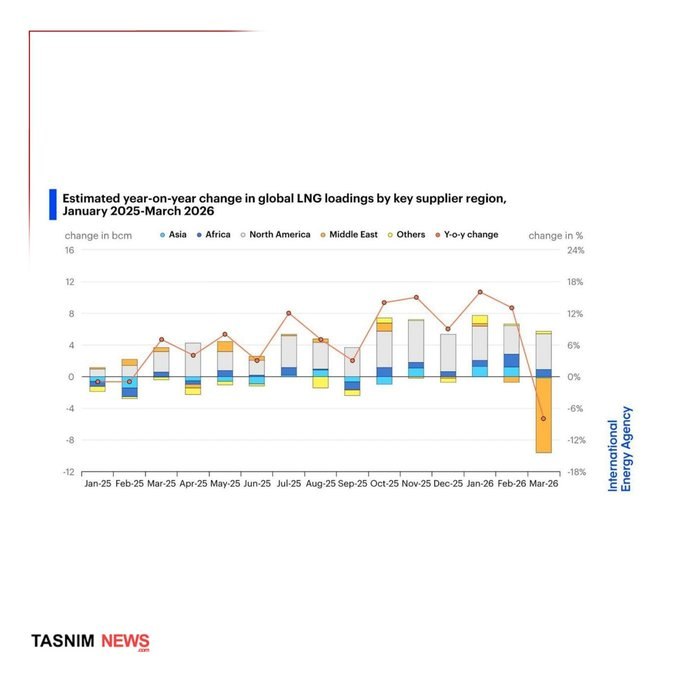
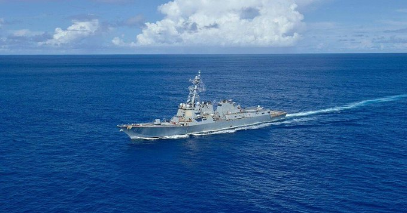
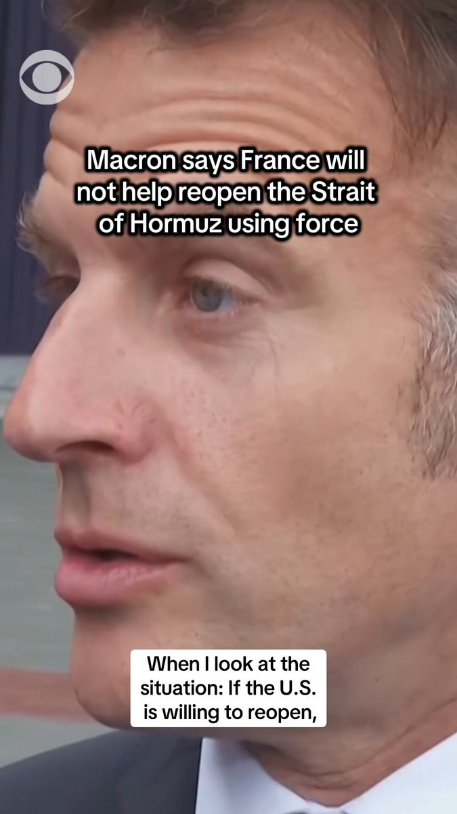
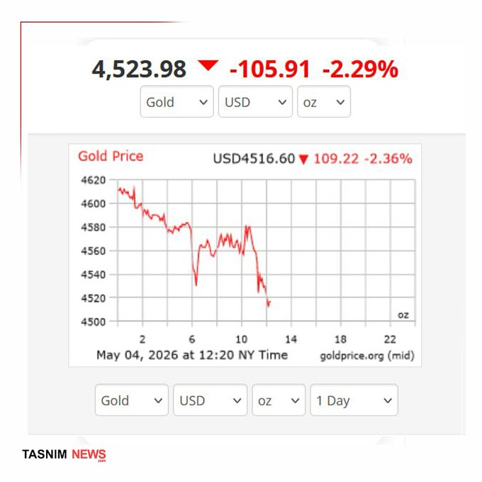
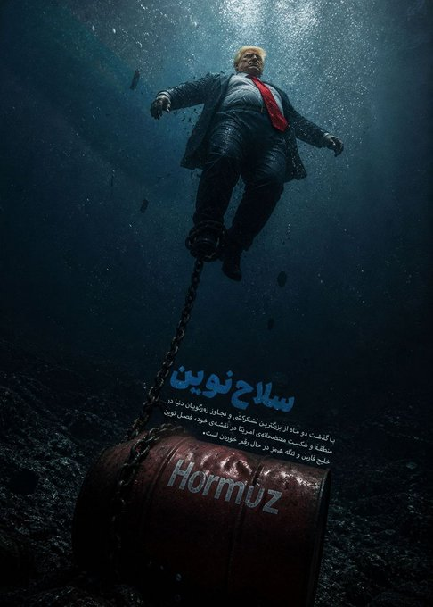
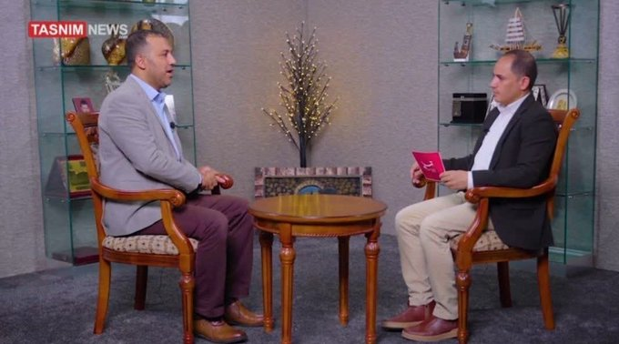

@CBSNews
📝 原文: Live Updates: Met Gala 2026 "Costume Art" red carpet pictures from New York City
🇨🇳 译文: 实时更新：纽约 Met Gala 2026“服装艺术”红毯图片

🕒 2026-05-04T21:40:38+00:00
| 来源 | 旧窗口内数量 | 本次新增 | 本次淘汰 | 当前窗口内共有 |
|---|---|---|---|---|
| 推文 + Dawn 新闻 | 0 | 34 | 0 | 34 |
| ARY News | 0 | 10 | 0 | 10 |
注：淘汰数 = 旧窗口内数量 + 本次新增 - 当前窗口内共有













